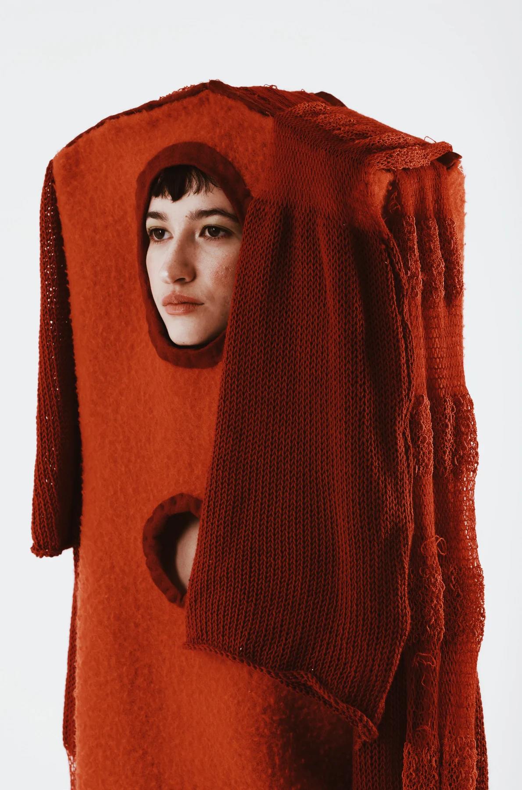
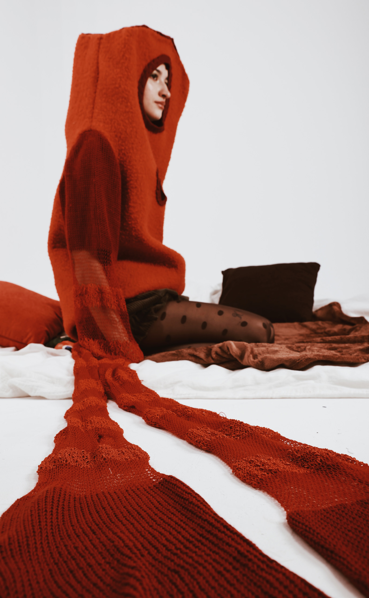
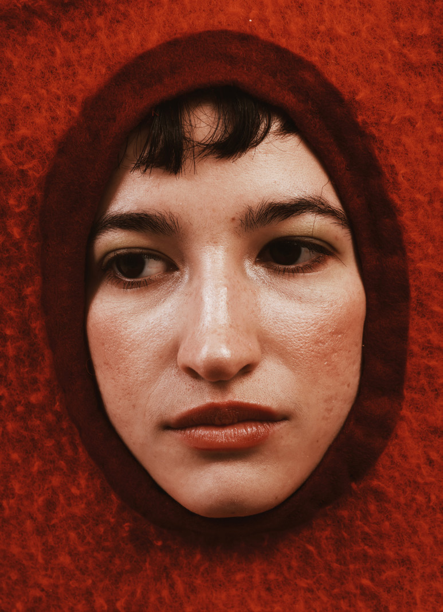
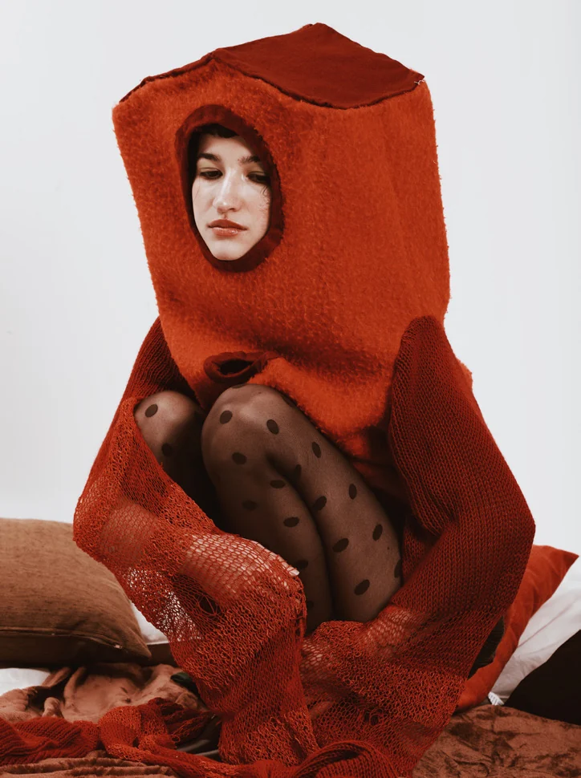
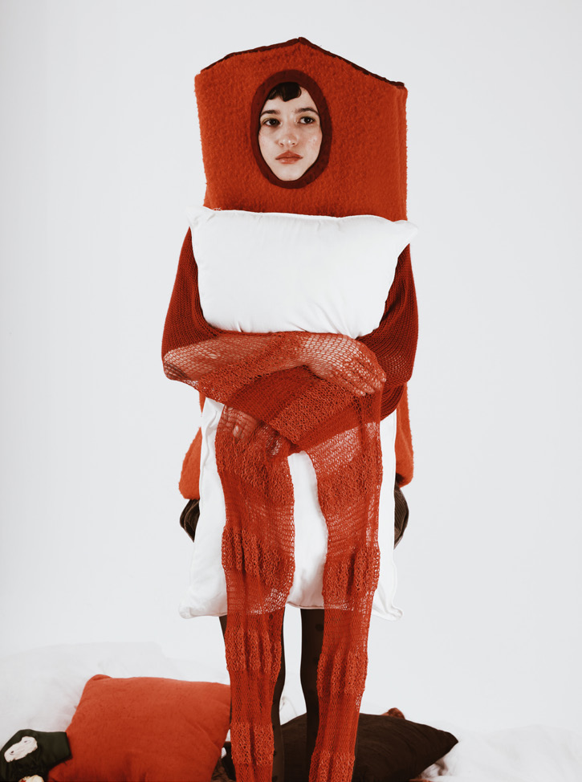
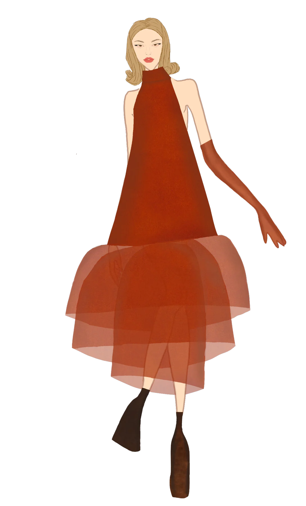
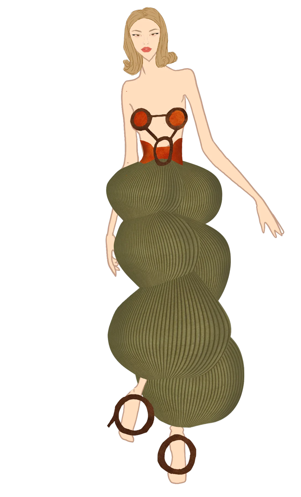
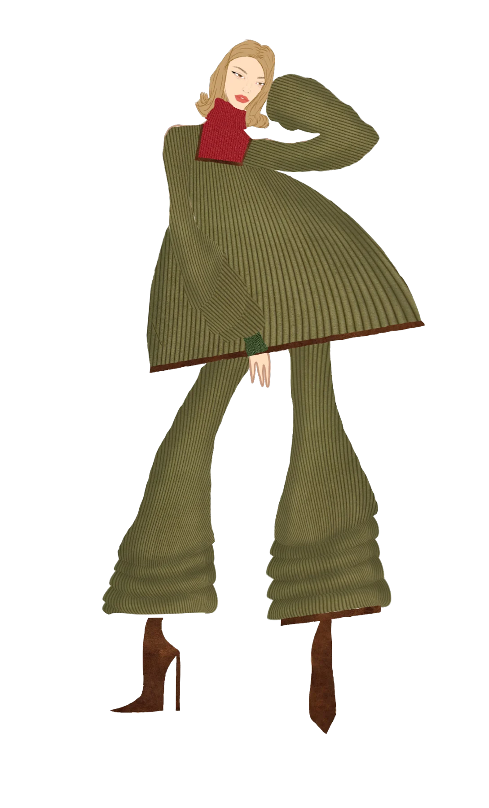
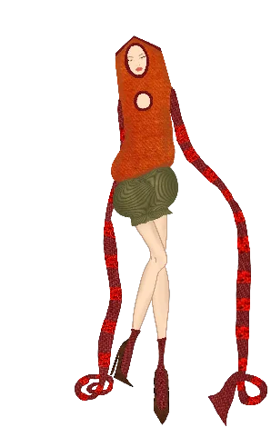

PROYECTO / 01
Diseño de moda · Investigación textil
¿Hay alguien en casa?
El hogar, llevado en la piel.

Una colección que explora el hogar como refugio emocional. La moda y el interiorismo retro se encuentran en prendas concebidas como pequeñas habitaciones portátiles.
- DISCIPLINAS
- Diseño de colección, investigación, ilustración y confección
- ENFOQUE
- Proyecto de diseño de moda
01 / EL CONCEPTO
Vestirse de refugio.
En momentos de desconexión o incertidumbre, el hogar puede ser un estado mental de calma e introspección. Esta colección traduce esa sensación en volúmenes envolventes, texturas de punto y geometrías orgánicas.
La investigación conecta el color y la emoción de Ettore Sottsass y Verner Panton con la relación entre cuerpo y entorno de Issey Miyake y Hussein Chalayan. Naranjas, verdes, marrones y amarillos construyen un universo nostálgico y cálido.




02 / EL PROCESO
De la idea al volumen.
Para construir la estructura de la casa, utilicé ballenas y tarlatana que aportan rigidez, recubiertas con tejido de jersey. Las mangas se realizaron en tricotosa, alternando tres tipos de lana.




Fotografía: @davidddnf · Modelo: Pamela Lozano